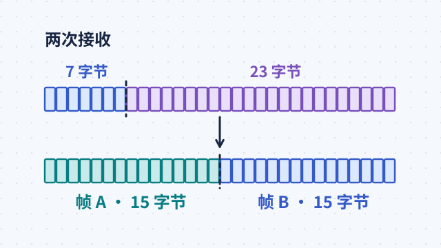

从机器人里的程序怎样传消息开始，读懂传感器数据，再追到网络字节和系统进程。
在模拟海龟上观察 ROS 图，再把一帧彩色图和深度数据对齐。
在 Jazzy 的海龟模拟器里搭一张通信图。先用话题控制速度，再调用服务、观察动作反馈，最后录下命令并验证回放。
解释 RGB-D 输入的颜色、深度、内参、时间戳和坐标系，并用一个已知像素计算相机空间的位置。
从应用消息的边界往下看，弄清楚一段数据怎样选路离开计算机。

从一条 15 字节的控制消息入手，计算接收缓冲区何时能交付一帧，并核对字段的字节序。
用三个重叠的 IPv4 前缀推算出口，再用 Linux 的只读查询区分选路结果和端到端连通性。
认识一次性服务的生命周期，用状态和退出记录判断程序是否完成。
区分服务单元、操作系统进程和任务留下的效果，解释 active (exited) 与一次性启动的关系。
常用关键词